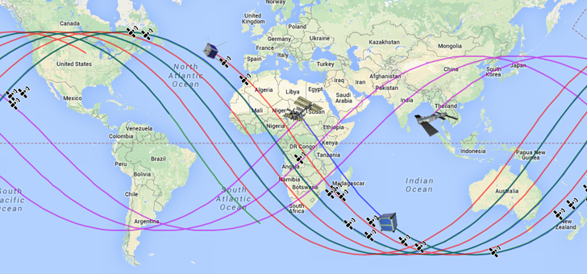

Orbits.js

A small library to display satellite orbits from two-line elements via Google Maps.
Example usage
var myMap = new google.maps.Map(...);
var myTLE = new orbits.TLE(tle_text);
var mySat = new orbits.Satellite({ map: myMap, tle: myTLE});
// You can also parse a file containing many TLEs
var TLE_Array = orbits.util.praseTLE(tle_text);
Documentation
Explore the library from here.
Library based on
- Models for Propagation of NORAD Element Sets By Felix R. Hoots and Ronald L. Roehrichm, December 1980
- Orbital Coordinate Systems, Part III By Dr. T.S. Kelso